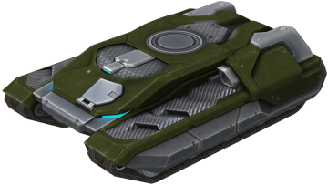
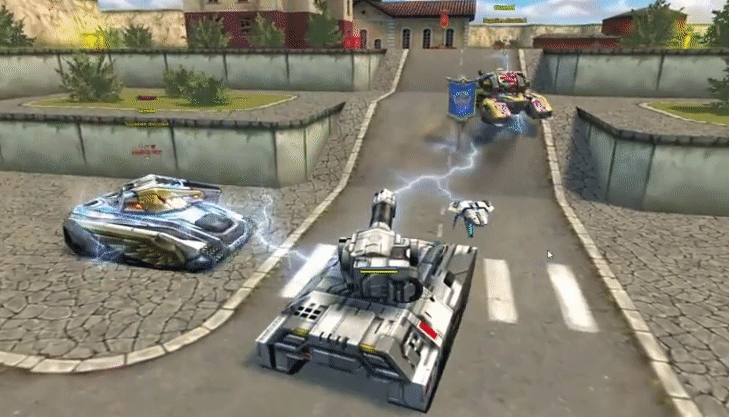
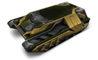
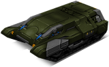
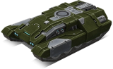

概括
猎人中甲作为通用且灵活的底盘，具有中等 HP。它在速度和质量方面介于维京和独裁者之间，
是地面上所有中型船体中机动性最强的。
由于炮塔以这种底盘为中心，因此许多人将其与蜂王之间的相似之处归因于它们相似的控制方式。
如果您正在寻找可以围绕敌人转圈跳舞的中型底盘，为什么不选择猎人中甲？
车库中的描述
这种由强化装甲钢覆盖的底盘是最通用的。
它将非常适合活跃、充满活力的战斗的粉丝，以及喜欢在位置上比赛的坦克手。
您将永远不会失业，无论是保护一个点还是为废墟中的城市街区进行激烈的战斗。
底盘的名字来源于能够使用电磁脉冲并使所有敌人的生命成为活生生的地狱。
从掩体攻击，猎人中甲可以禁用整组坦克，将它们变成容易火力的目标。
如果你对一个有组织的敌方团队巧妙地使用补给感到恼火，那么选择猎人中甲。
在第一次掩护攻击后，所有敌方坦克将开始与你拉开越来越远的距离。
装备改造

过速装置
电磁脉冲

皮肤

猎人中甲标准

猎人中甲 XT

青春猎人中甲

猎人中甲超高